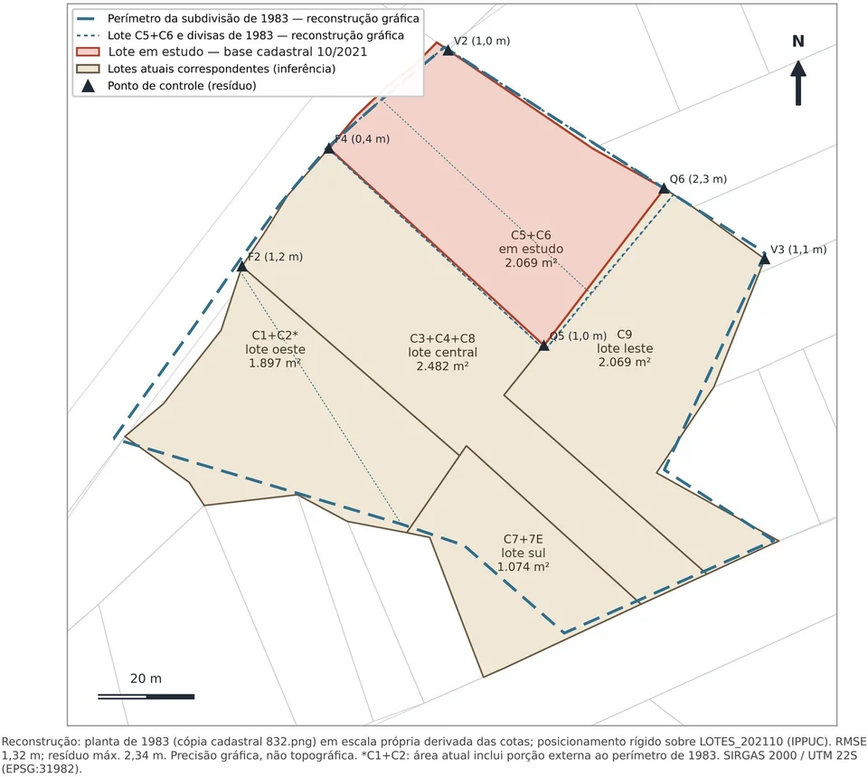

04 Project · Bigorrilho, Curitiba, Brazil
Urban Planning and Cadastral History Analysis in Bigorrilho
An audit of a 1983 subdivision and the merger of lots C5 and C6, with a cartographic reconstruction on the IPPUC cadastral base
Bigorrilho, Curitiba, Paraná, Brazil
A demonstrative technical model based on academic research from 2023 and revised in 2026; the report cover shows the name under its former spelling, Gabriel Barbosa Lourenço. The property's address, tax and real-estate registration numbers have been omitted to protect privacy.
Overview
The study reconstructs the history of a residential lot in Bigorrilho, next to Barigui Park, from the 1983 and 1985 cadastral plans, the 2023 Lot Information Statement and the 2021 IPPUC cadastral base. The lot results from the 1985 merger of two of the nine lots of a subdivision approved in 1983; the historical plan, positioned on the current base, confirms this origin and shows where today's layout departs from the original parcelling. Each act is read against the rules in force at its date, and each statement is classified as proven fact, technical inference, hypothesis or open item.
Problem
Property assessments often conflate municipal approval, cadastral information, land registration and physical occupation, and apply current law to old acts. For the lot studied, the 2023 report misidentified the original lots, and the recorded environmental restrictions weigh more than the zoning for anyone planning to build, subdivide or buy.
Objective
Answer five questions on a verifiable basis: where the lot comes from in the parcelling history; which acts changed its geometry and when; which rules applied to each act and which apply today; which planning and environmental restrictions appear in the official information; and which conclusions depend on documents not yet obtained.
Methods & tools
- Document survey: 1983 (subdivision) and 1985 (merger) cadastral plans, approval stamps, and the 2023 Lot Information Statement and adjoining-owners statement.
- Audit of the 1983 table: sum of the nine areas, frontages and the share of C5+C6, checked by script and spreadsheet.
- Graphic reconstruction of the 1983 perimeter, at a scale derived from the plan's dimensions, rigidly positioned on the IPPUC lot base (2021) with 6 control points (RMSE 1.32 m).
- Comparison between documented and graphic areas, with polygon overlay and Hausdorff distance.
- Legal framework by period — Federal Law 6,766/1979, municipal legislation and Law 15,511/2019 — without applying later rules to earlier acts; review of environmental restrictions and of the Land Value Map series (2002–2023).
- Evidence matrix with 44 statements classified as proven fact, technical inference, hypothesis or open item.
Data sources
- Prefeitura Municipal de Curitiba — plantas cadastrais de 1983 (subdivisão de parte do Lote "C" do Croqui nº 2400) e 1985 (unificação dos lotes C5 e C6), cópias digitalizadas
- Prefeitura Municipal de Curitiba — Consulta Informativa do Lote e Consulta de Confrontantes (11/03/2023)
- IPPUC — bases cartográficas de lotes (10/2021), zoneamento, parques e bosques, lagos, divisa de bairros e arruamento; camada da Planta Genérica de Valores
- Legislação federal (Leis 6.766/1979 e 12.651/2012) e municipal (Leis 15.511/2019 e 15.784/2020; Leis Complementares 91/2014 e 136/2022, entre outras)
- Imagem de capa: Esri World Imagery (Source: Esri, Vantor, Earthstar Geographics, and the GIS User Community); contorno do lote: base de lotes do IPPUC (10/2021)
Data belong to their respective sources and are subject to their own terms of use.
Data, processing and quality assurance
- Sources
- Municipality of Curitiba: 1983 and 1985 cadastral plans (scanned copies), the 2023 lot information and adjoining-owner records; IPPUC: parcel layer (Oct 2021), zoning, parks and woodland, lakes and street network; land value map (Planta Genérica de Valores); federal and municipal legislation.
- Formats
- Scanned plans (images) and IPPUC vector layers; outputs in GeoPackage (historical geometry), an Excel workbook (evidence matrix) and matplotlib figures.
- Coordinate reference system
- SIRGAS 2000 / UTM zone 22S (EPSG:31982).
- Processing
- Scale derived from the plan dimensions; graphic reconstruction of the 1983 boundary; rigid positioning on the IPPUC parcel layer using 6 control points; calculation of areas, overlap and distances.
- Quality checks
- 1983 area table (nine lots, 8,862.00 m²) totals checked by script and spreadsheet; positioning RMSE of 1.32 m with a maximum residual of 2.34 m; 2,036.10 m² overlap with the cadastral lot and a Hausdorff distance of 2.32 m; 44 statements traced in the evidence matrix.
- Corrections and handling
- Discrepancies documented rather than adjusted: the lot's graphic area is 3.77% smaller than the documented area; a neighbouring lot is 23.7% larger than its original lots, which indicates undocumented added land.
- Limitations
- Graphic, not survey-grade, accuracy; it does not replace title records or a land survey; administrative files and part of the legislation of the time were not obtained.
Results
24.26%
of the 1983 subdivision (8,862.00 m² in nine lots, with no public land and no new streets) is lot C5+C6, merged in 1985 with 2,150.21 m² and a 32.50 m frontage.
2.32 m
is the maximum offset between the lot reconstructed from the historical plan and the lot in the 2021 cadastral base; the polygons overlap by 2,036.10 m², confirming the lot's origin.
−3.77%
is the difference between the design area and the 2021 graphic area (2,069.06 m²). Across the five current lots, the graphic area exceeds the documented one by 4.01%, and one of them is 23.7% larger than its original lots.
9.3 m
separate the lot from Barigui Park (30.8 m from the mapped lake shore). The Lot Information Statement records a 50 m permanent preservation strip, relevant native woodland and a buffer zone — restrictions that weigh more than the ZR1 zoning.
Maps & charts
Click the image to zoom in; drag or scroll to move around.


Enlarge image Enlarge image
Enlarge imageExplore additional maps, charts, and results in the full report available at the end of this page.
Full materials
Full report (PDF, Portuguese)
Document in Portuguese.
Full report (PDF, Portuguese) (Opens in a new tab)Code and data
The study draws on cadastral documents for a private property. To protect privacy, the evidence matrix, the GeoPackage with the historical geometry and the scripts are not published; the full report sets out the calculations and the method.